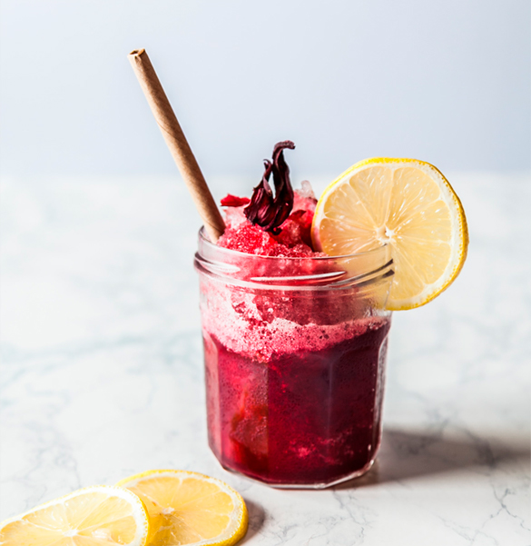

<div class="story" id="story">
	<div class="story__row">
		<div class="story__column">
			<div class="story__box">
				<div class="title story__title">Our story</div>
				<div class="description story__description">As products typically using raw fruits or vegetables,
					smoothies
					include dietary fiber (e.g. pulp, skin, and seeds) and so are thicker than fruit juice, often with a
					consistency similar to a milkshake. </div>
				<a href="#" class="link story__link">Who we are</a>
			</div>
		</div>
		<div class="story__column">
			<div class="story__image">
				
			</div>
		</div>
	</div>
</div>